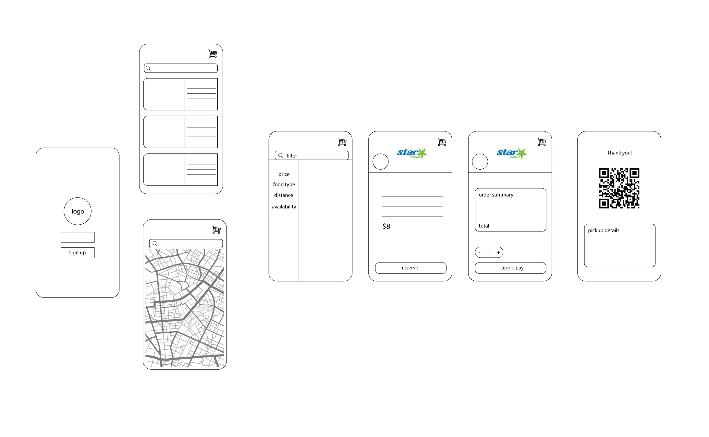
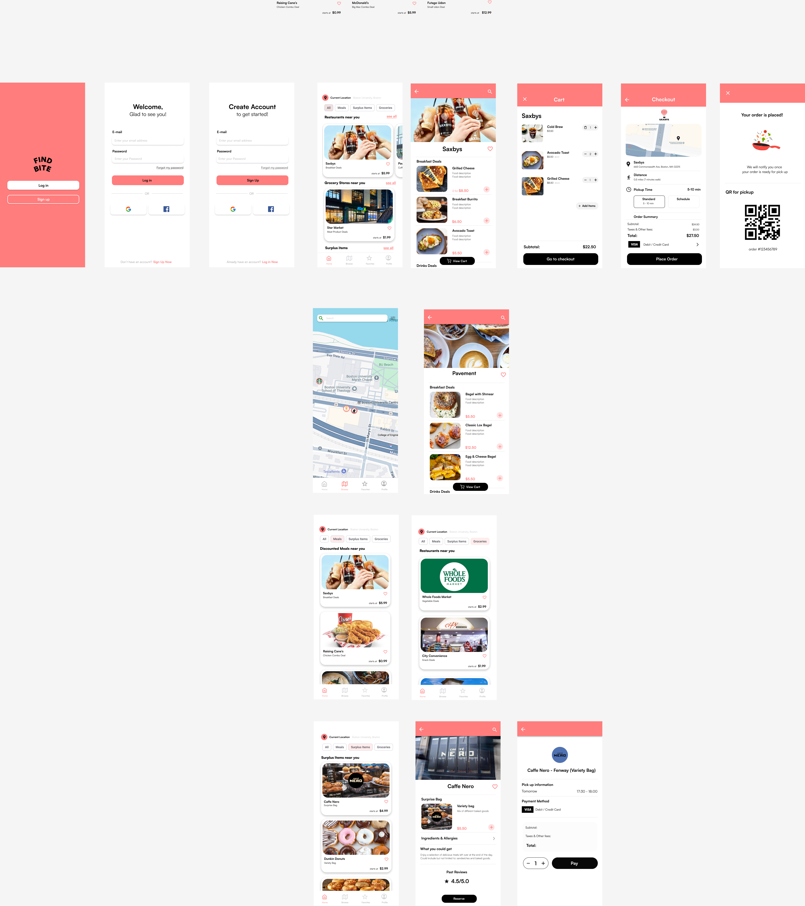

Find Bite
Find Bite is a UX Design case study of an application that aims to help users find discounted food and groceries nearby. I designed the interface to be intuitive and user friendly, with features like filtering by food type, map-based navigation, and deal tracking to support users in using a budget-friendly tool.
The Problem
Finding affordable and decent quality food and groceries can be challenging, especially for college students. The idea for this project came from noticing how many college students struggle with limited food budget and conforming to consuming unhealthy food to save money. At the same time, many stores often have unsold items that they are willing to sell at a discounted price. However, there wasn't an easy way for students to find these deals in one place. Find Bite was created to bridge that gap, connecting users with nearby deals to help reduce waste and save money.

Research
To understand the problem, I observed how college students manage their food expenses and identify what pain points they experience in eating affordably. I conducted user interviews asking abouth their frustrations and strategies for finding cheap food.
Common themes / problems
- They want to save money on food, but do not know where to find reliable deals
- They rely on food delivery apps, but these services add extra fees, defeating the purpose of saving money
- They are unaware that some restaurants sell "leftover" items at a discount near closing time

User Personas
From the research, I have developed two user personas to guide the design:
- A college student with limited food budget who wants daily access to food deals nearby
- A sustainability-minded user who wants to reduce food waste
The Design
Using insights from my sesearch, I began visualizing the design and created a rough wireframe.
I prioritized simplicity and user-friendly interface with intuitive navigation. The home page contains cards of different restaurants for quick scanning. On top of that, there is a map page that allow users to visually browse for deals nearby.
To maintain consistency and clarity, I established the following style guide:
- A warm and friendly color palette that is inviting and pleasant to the eyes
- Rounded icons and clean fonts to make the interface feels approachable
- Simple visual hierarchy that help guide the users' eye through the page
Prototype